アーカイブストレージ¶
Archival Storageタブには、Archivematicaインスタンスに保存されているArchival Information Packages （AIP）がすべて表示されます。ページの上部には検索インターフェイスがあり、簡単なクエリやブーリアンクエリを作成して、保存されているAIPや個々のアイテムを検索できます。テーブルの上部には、保存されている AIP の合計サイズとインデックス付けされたファイルの数が表示されます。デフォルトでは、テーブルにはAIPの名前、UUID、ディスク上のサイズ、AIPが作成された日付、ステータス、AIPが暗号化されているかどうかが表示されます。
{kind=link}
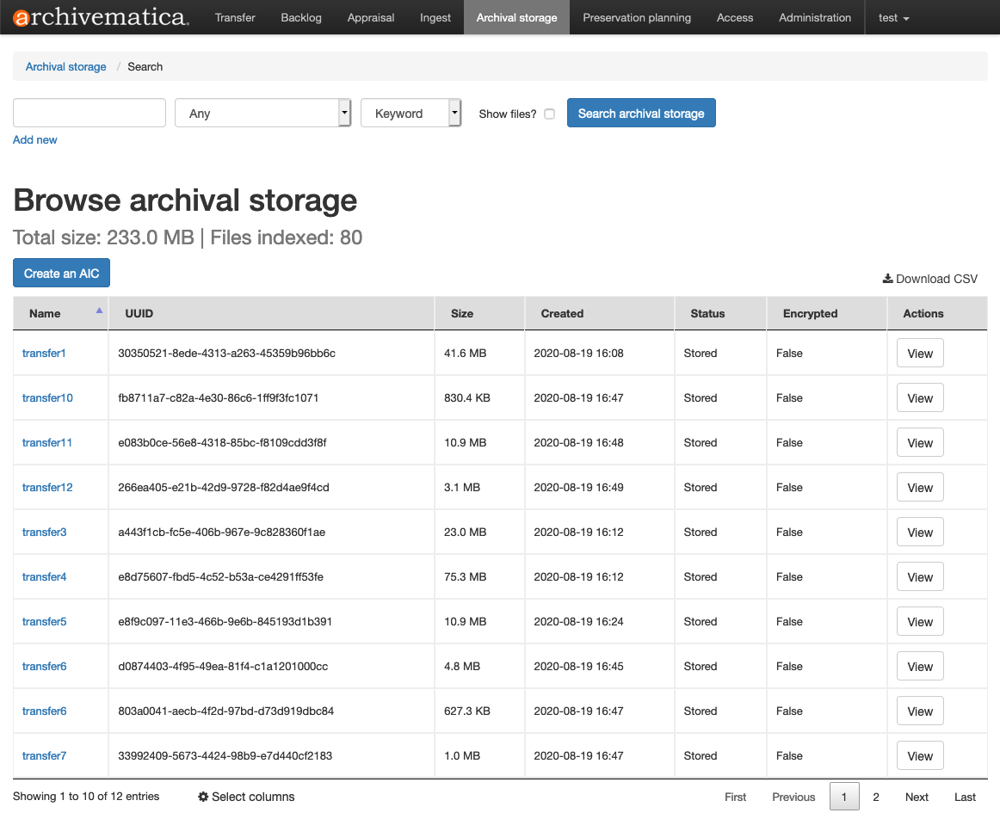
Archival Storageタブでは、個々のAIPを選択してダウンロードしたり、削除したり、 AIPの再インジェスト したりできます。
普及情報パッケージ（Dissemination Information Packages：DIP）は、保存されていても「アーカイバルストレージ」タブには表示されないことに注意してください。保存されたDIPへのアクセスについては、 Storage Service の文書を参照してください。
このページ上
注釈
Elasticsearch を使用せずに Archivematica を実行している場合、または Elasticsearch の機能が制限されている場合、ダッシュボードに [アーカイブストレージ] タブが表示されないことがあります。
AIPストアの閲覧¶
[アーカイブストレージをブラウズ] テーブルの下部には、 列選択 アイコンがあります。これをクリックして、[アーカイブストレージ] テーブルで表示する列を選択します。青い行は、列が現在表示されていることを示します。白い行は、その列が現在表示されていないことを示します。
{kind=link}
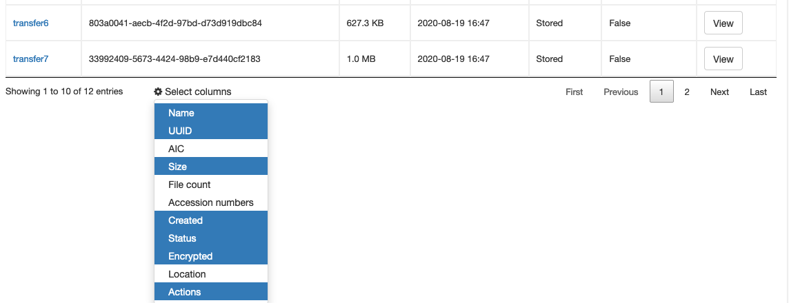
青または白の行をクリックすると、各列のこの値が切り替わります。以下の例では、利用可能なすべての列が選択されています。選択したカラムは、ユーザーセッション間でも保持され、同じArchivematicaパイプラインの他のユーザーにも適用されます。
{kind=link}
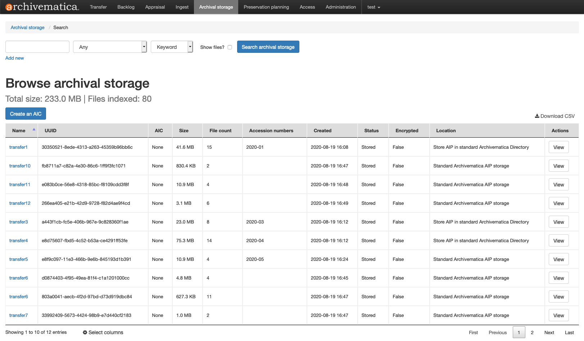
列のヘッダーをクリックすると、昇順または降順に並べ替えることができます。上下のキャレット（矢印）が表示されます。（例： ファイル数： 以下参照）。
{kind=link}
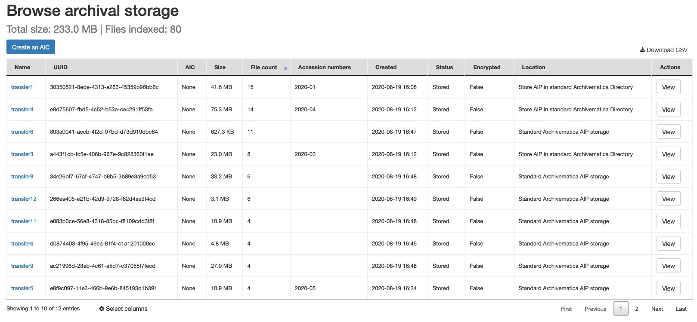
画面上部の ファイル表示 オプションを有効にすると、アーカイブストレージ AIPに含まれるすべてのファイルが [アーカイブストレージテーブルをブラウズ] に一覧表示されます。
{kind=link}
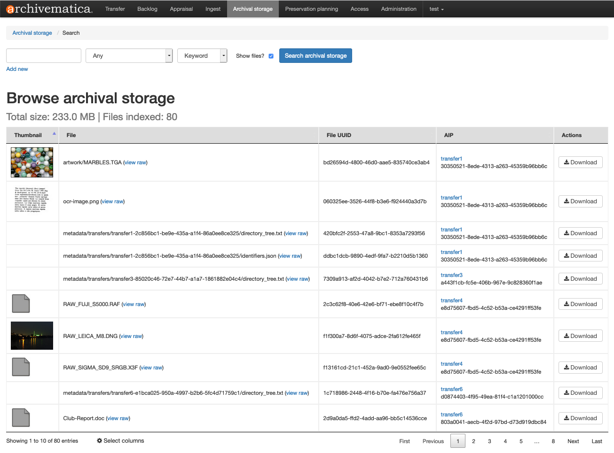
列を選択 オプションは、 ファイルを表示 テーブルでも利用できます。
{kind=link}
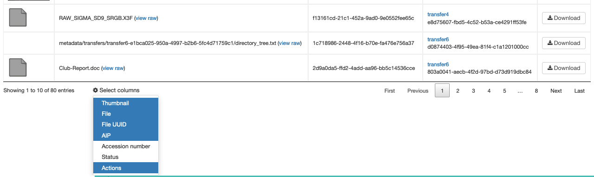
列の並べ替えは、 ファイル表示 テーブルでも可能です（例： AIP 以下の列を参照してください）。
{kind=link}
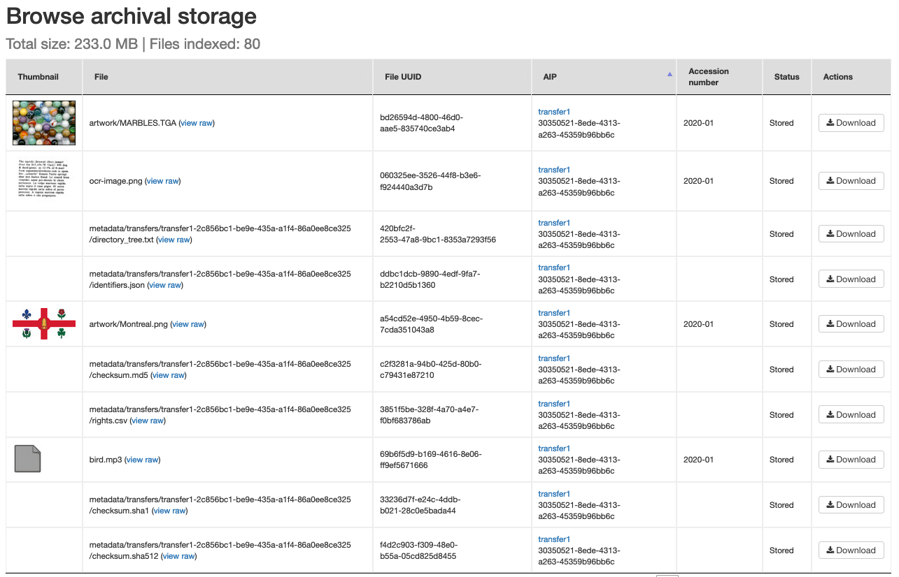
また、 AIP の列セルには、AIP情報ページへのハイパーリンクが含まれていることに注意してください（例："transfer1" ）。そのページから、個々のAIPを選択してダウンロードしたり、削除したり、AIPの再インジェストを開始したりできます。
すべてのAIPメタデータをCSVファイルでダウンロード¶
[アーカイブ ストレージの参照] タブで使用できるすべての列に表示されるすべての値は、CSV (カンマ区切り) ファイルにダウンロードできます。この CSV ファイルは、以下で説明する検索機能を超えて、AIP 情報のより詳細な分析とフィルタリングに使用できます。CSV データは、レポート作成ツールやグラフ作成ツールへの入力データとして使用することもできます。
アーカイブストレージをブラウズ テーブルの右上にある CSV をダウンロード リンクをクリックします。
{kind=link}
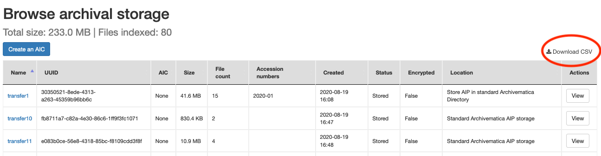
CSV ファイルを保存する場所を指定するプロンプトが表示されます。CSV データには、現在どの列が選択されているかにかかわらず、すべての列の値が含まれます。また、[アーカイブストレージ] タブに現在どの AIP が表示されているかに関係なく、アーカイブストレージ内の各 AIP のメタデータも含みます。
AIPストアの検索¶
Archival Storageタブでは、Archivematicaインスタンスのインデックスに表示されているAIPを検索できます。すべての検索結果を自由に検索することも、1つ以上の検索パラメーターを使用して検索を制限することもできます：
File UUID ：AIP内の特定のファイルのUUID。
ファイル拡張子 ：AIP内のファイルのフォーマット拡張子。
AIP UUID ：AIPのUUID。
AIP名 ：AIPの名前。
Identifiers ： identifiers.json ファイルを使用して AIP に追加された外部識別子；または、提出文書として含まれる MODS ファイルまたは Islandora 転送の METS ファイル（ Islandora 統合 を使用）の
<identifier>フィールドの値。AIC の一部 ：AIPの説明メタデータに追加された AIC 番号。
AIC#の後に値（すなわちAIC#GWQ498）が続く形式。これはAICを構成する個々のAIPを検索します。AIC identifier ：作成された AIC の識別子。
AIC#の後に値（例：AIC#GWQ498）が続く形式。この検索はAICパッケージを返します。転送メタデータ ： ディスクイメージ転送タイプ用の特別なメタデータフォームを使用して追加されたメタデータ .
Transfer metadata （other） ：バッグ転送の
bag-info.txtの内容。このオプションを選択すると、2つ目のデータ入力ボックスがポップアップ表示され、検索したい特定のbag-info.txtフィールドを定義できます。たとえば、bag-info.txtにSource-Organization: My Orgという行が含まれている場合、2つ目のデータ入力ボックスにSource-Organizationと入力すると、検索対象をそのフィールドに限定できます。
また、検索文字列をキーワード、フレーズ、または日付範囲として定義もできます：
Keyword ：デフォルトでは、Keywordオプションは検索文字列をブーリアンOR検索として扱います。例えば、
2015-Annual-Reportを検索すると、実際には"2015 OR Annual OR Report" が検索されるため、"2015" または"Annual" または"Report" という名前のものが検索結果に含まれます。特定の文字列を検索するには、文字列の周りに引用符を追加します -"2015-Annual-Report"。Phrase ：フレーズ・オプションは検索をより柔軟にします。
council-minutes、councilminutes、council-reportという名前のAIPを見つけるためにcouncil*のようなあいまい検索を行うためにPhraseオプションを使うことができます。日付範囲 ：2つの日付の間にArchivematicaで作成されたAIPを検索できます。
2015-01-02:2015-03-15のように、日付、コロン、2 番目の日付を入力すると、日付範囲を検索できます。
検索の実施¶
[Archival Storage］タブで、画面上部のテキストボックスに検索語を入力します。検索結果を特定のパラメーター（AIP名やファイルUUIDなど）に限定したい場合は、最初のドロップダウンボックスを使用してパラメーターを選択します。デフォルトでは、パラメーターが Any に設定されており、ストレージインデックス全体を検索します。2番目のドロップダウンメニューを使用して、キーワード、フレーズ、日付範囲のいずれで検索するかを選択します。
AIP ではなく、個々のファイルを検索結果に表示したい場合は、 ファイルを表示 のチェックボックスを選択します。
ブール検索を構築するには、 新規追加 をクリックします。2つ目のテキストボックスとドロップダウンメニューが表示されます。 Or 、 And 、または Not をブールコネクターとして選択できます。
{kind=link}
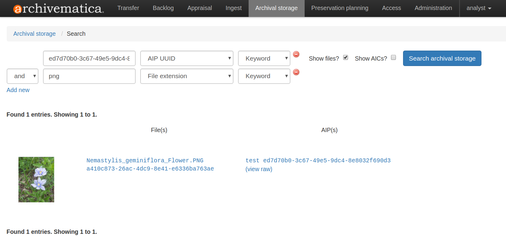
検索結果の横にある View raw をクリックすると、検索用にインデックス化された生の JSON ストリームを表示もできます。JSONにはMETSデータ、データを生成したArchivematicaのバージョン、AIPのUUID、インデックスが作成された時間、AIP内の相対ファイルパスが含まれています。
アーカイブ情報コレクション（AIC）の検索¶
Archivematica には、1つのコレクションを複数のAIPに分割し、 Archival Information Collection （AIC） として連結する機能があります。AICの検索については、 AICの検索 を参照してください。
AIP情報ページ¶
AIPの名前をクリックすると、AIP情報ページが開きます。このページから、関連するDIPのアップロード、AIPの再インジェスト、AIPの削除、AIPのダウンロード、METSおよびポインターファイルの閲覧が可能です。
{kind=link}
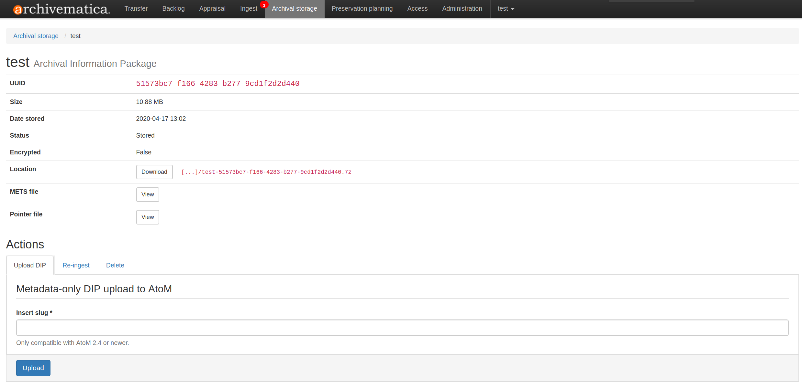
AIPのダウンロード¶
AIPをダウンロードするには、 Download をクリックします。ウェブブラウザでダウンロードが始まります。非常に大きなAIPの場合、ダウンロードが開始されるまでに数分かかることがあります。非常に大きなAIPをダウンロードする場合、Archivematicaのデフォルトのタイムアウトにかかり、AIPがダウンロードされないことがあります。タイムアウトの調整については、 Scaling up 文書を参照してください。AIPのサイズが大きすぎる場合は、ストレージから直接ダウンロードする必要があります。
AIP の仕組みの詳細については、 AIPの構造 を参照してください。
METSファイルのダウンロード¶
AIP METS ファイル は、AIP 内のすべてのデジタルオブジェクト（オリジナルファイル、保存マスター、ライセンスファイル、OCRテキストファイル、提出文書など）をリストアップし、相互の関係を記述し、デジタルオブジェクトをその記述的、技術的、出所、および権利メタデータにリンクします。
AIP をダウンロードせずに METS ファイルを見るには、 METSファイル の隣にある View をクリックします。METS ファイルは、ブラウザで開くか、自動的にダウンロードが開始されます。
ArchivematicaのMETS実装の詳細については、 ArchivematicaにおけるMETS を参照してください。
ポインターファイルのダウンロード¶
AIPポインターファイルは、AIP がどのように保存用にパッケージされたか、その固定性、AIP の保存場所に関する情報を提供します。ポインターファイルは主に Archivematica が AIP を取得するために使用します。
ポインターファイルをダウンロードするには、 ポインターファイル の隣にある 表示 をクリックしてください。ポインターファイルはブラウザで開くか、自動的にダウンロードが開始されます。
AtoMへのメタデータのみのアップロード¶
AIP情報ページから、接続されている AtoM サイトにメタデータのみのアップロードを送信することが可能です。詳しくは、 AtoMへのメタデータのみのアップロード を参照してください。
AIPの再インジェスト¶
AIP情報ページから、メタデータの追加や更新、DIPのオンデマンド作成、すべてのマイクロサービスの再実行などのために、AIPを再インジェストすることが可能です。詳細は、 再インジェスト AIP を参照してください。
AIPの削除¶
ArchivematicaでAIPを削除するには、2つのステップがあります。まず、ユーザがAIPの削除を要求します。次に、Storage Serviceの管理者がStorage Serviceのインターフェイスから削除を承認する必要があります。管理者がリクエストを承認すると、Archival StorageからAIPが削除され、インデックスが更新されます。管理者が要求を拒否した場合、AIPはストレージに残ります。
AIP 情報ページで、ページ下部の 削除 アクションタブに移動します。
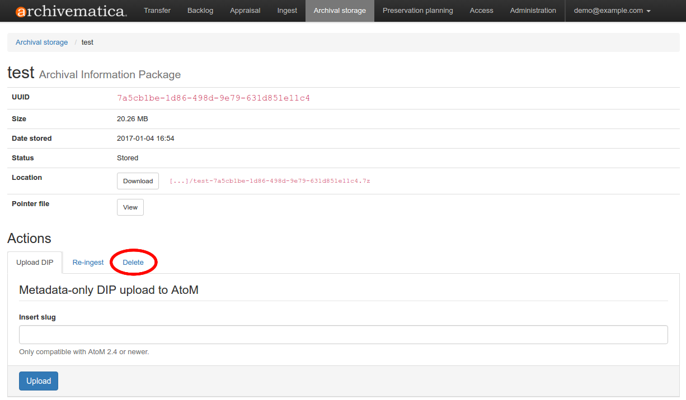
AIP UUIDと削除理由を入力します。
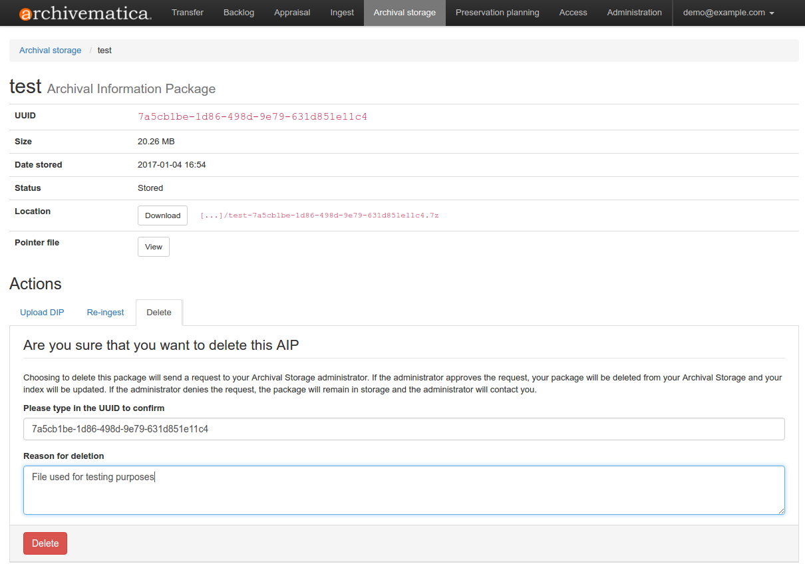
[削除] をクリックします。[アーカイブストレージ] タブを更新すると、AIP のステータスが Deletion requested と表示されます。
{kind=link}
{kind=link}
重要
Archivematica は、Storage Service 内と、ダッシュボードから検索できる Elasticsearch インデックスの 2 つの方法で AIP の場所と存在を追跡します。Storage Serviceではなくファイルシステムから直接 AIP を削除すると、両方のアプリケーションで不整合が発生するため、生産環境ではお勧めできません。
AIP暗号化¶
Archivematica 1.7からは、AIPを暗号化して安全に保管できるようになりました。この機能は、機関がAIPをオフサイトで保管する場合に特に便利です。
暗号化されたAIPを作成するには、Archivematicaがストレージサービスで暗号化されたスペースと場所を設定する必要があります。詳しくは、 暗号化 を参照してください。
通常のマイクロサービスを介して転送を実行します。
[インジェスト] タブの「Store AIP location job」で、暗号化されたAIPの場所を選択します。これで暗号化されたAIPができました！
AIPが暗号化されているかどうかは、[Archival Storage] タブの表の 「暗号化」列を見ればわかります。暗号化されたAIPは、 True と表示されます。
{kind=link}
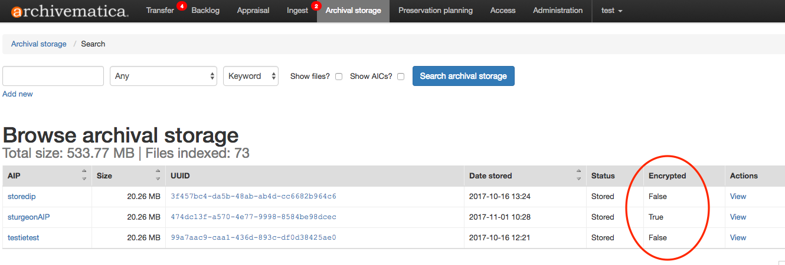
AIPポインターファイルは、暗号化イベントのための PREMIS：EVENT エレメントを含みます。
AIP自体は、[Archival Storage] タブから暗号化されていない形でダウンロードできます。
AIPストレージ構造¶
ArchivematicaのStorage Serviceは、効率的な保存と検索のために、AIPのUUID（各AIPに割り当てられた32桁の英数字からなる一意の汎用識別子）に基づいたディレクトリツリー構造を採用しています。各UUIDは、管理しやすい4文字のチャンク（"UUID quad" ）に分割されます。
{kind=link}
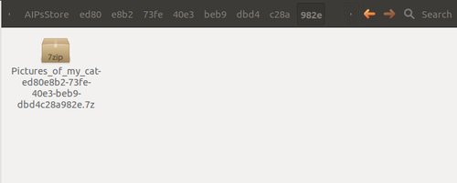
各四角形は、ディレクトリを表します。AIPのUUIDの最初の4文字（最初のUUIDの四角形）は、AIPストレージのメインサブディレクトリの名前として使われます。2番目のUUIDの四角は最初のサブディレクトリの名前として使われ、以下同様です。最後の4文字（最後のUUIDの四角形）は、AIPストアのディレクトリツリーのリーフを作成するために使われ、そのUUIDを持つAIPはそのリーフに存在します。
このフォルダ構造は、圧縮されたAIPも圧縮されていないAIPも同じです。保存のために圧縮されたAIPは .7z です。非圧縮AIPは、zipファイルではなく、ディレクトリとして保存します。
クワッドディレクトリ構造は、保存のためだけに使用されます。AIPをダウンロードすると、クワッドディレクトリではなく、AIPそのものが得られます。
AIP の仕組みの詳細については、 AIPの構造 を参照してください。